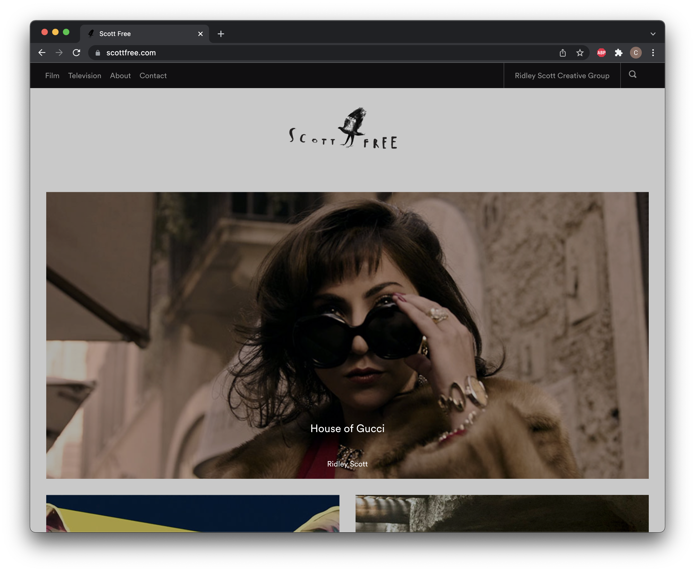
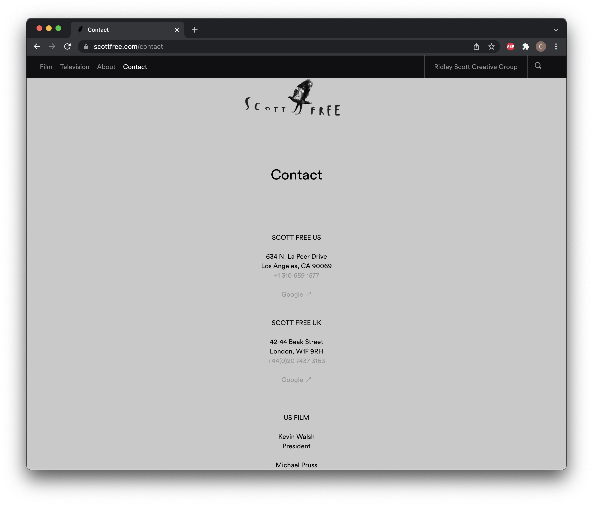
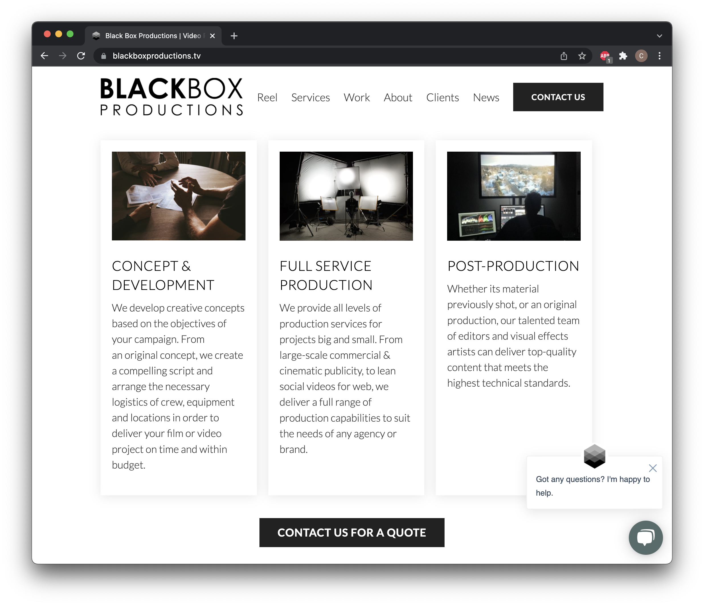
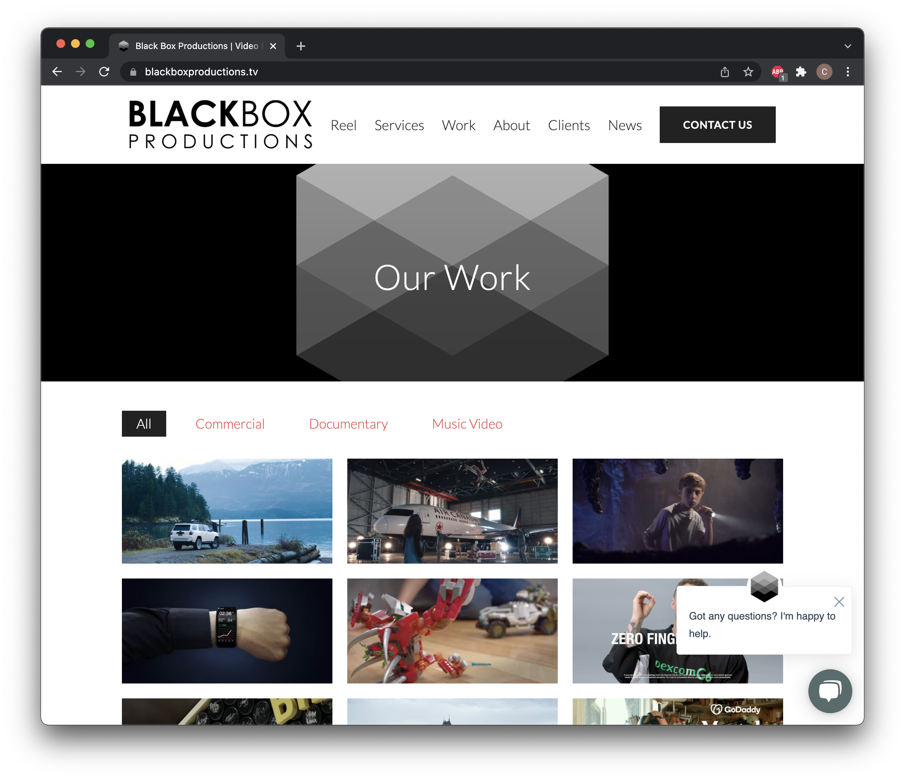

Final project proposal
Introduction
House On A Hill Productions
House On A Hill Entertainment is an independent production company based in Santa Barbera. It is a team of filmmakers and artists who strive to inspire media in the film and television industries. It aims to produce and deliver the production of film or event-animated films, commercials, and music videos.
Target audience
The people who will use this site are directors or more likely producers in need of a film production company. They will need work in producing video content for television, social media, corporate promotions, commercial or other media-related fields. As well as helping develop content, producing content, even help with post-production, or hiring directors and crew. Sometimes larger entertainment companies such as major networks will reach out to these smaller film production companies. Brands as well as smaller music studios might use this sight, in need of videos for commercials or music videos.
Their goals are to explore the site and eventually decide if this video company ais right for their video needs. Most of these types of sights showcase photos or reels right off the bat because customers will analyze everything on the website as they are there for technical needs. They also need the contact information, in case they want to connect, and they want to learn about the history of the company and what they do.
Comparative analysis
Laika Studios


Scott Free Productions
 Website 3
 Website content
Home
House On A Hill Entertainment is an independent production company based in Santa Barbara. It is a team of filmmakers who strive to inspire media in the film and television industries. It aims to produce and deliver the production of film or event-animated films, commercials, and music videos.
[Film reel and the logo of a house on a hill.]
Contact
Call us anytime to set up an appointment or just stop by the shop.
Location: Santa Barbara Phone: 805 245 9562 Email: charlottessaunders@gmail.com
[Image of the outside of the shop.]
Services
Whatever the project in your minds eye, we can help you out. We provide marketing production services, recruitment videos, music videos, or anything you need really when it comes to video production. We produce both live action and animated video. Animation is particularly efficient for some videos, allowing for simplified visuals that quickly get to the heart of your offering.
[Images of animations and people filming.]
Products
We also provide stickers and figures with designs based on some of our own films. These are avaiable for purchase inside the shop only.
Prices range from $5.00 to $23.00.
[Small figures on stands and stickers from the films.]